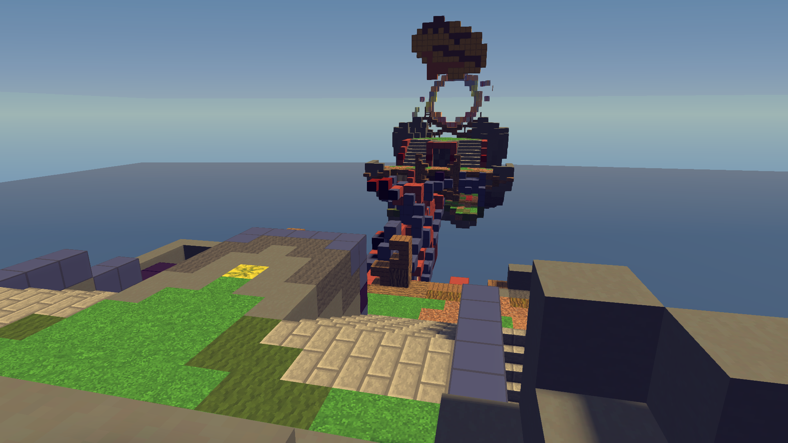
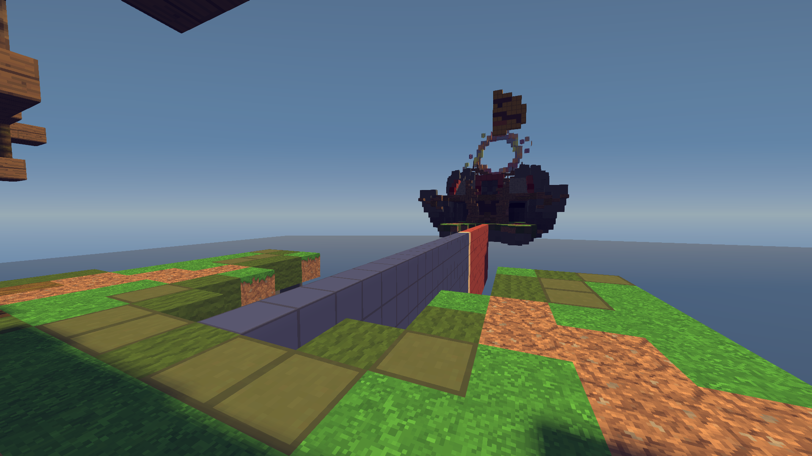

seventown!
subheading
Bacon ipsum dolor amet beef chislic tenderloin drumstick filet mignon turkey cupim doner fatback beef ribs. Shoulder beef kielbasa ball tip chicken bacon turducken kevin fatback tail. Chicken biltong spare ribs, bacon landjaeger sirloin beef ribs jerky boudin ham hock kielbasa tail short loin alcatra. Picanha shankle strip steak meatloaf kevin jerky turkey porchetta chislic chicken short ribs fatback turducken venison swine.
Ham pancetta pork chop venison cow tenderloin ham hock tri-tip short loin filet mignon tail. Ball tip beef ribs ribeye sausage burgdoggen biltong pork chop shank prosciutto beef boudin corned beef. T-bone jowl buffalo andouille drumstick ribeye kevin flank spare ribs jerky swine hamburger salami tail shoulder. Swine pork kevin burgdoggen meatloaf jowl ball tip shankle chislic bresaola spare ribs drumstick ham prosciutto.
